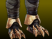
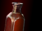
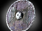
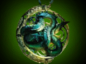

Heroes

Clawed Boots:
- Damage bonus reduced from 26 to 22.

Darkmoon Sword:
- Active damage reduced from 3x hero’s intelligence to 2x.

Darkmoon Sword:
- Active HP regen bonus increased from 7 to 20.

Hermes Boots:
- Passive move speed bonus reduced from 125 to 115.
- Inactive move speed bonus is unchanged (50).

Health Potion:
- HP regen bonus reduced from 15 to 10.

Hydra's Thirst:
- Passive illusion damage taken increased from 300% to 350%.

Jonathan's Willpower:
- Active HP regen bonus increased from 15 to 35.

Loyal Paw:
- Agility increased from 16 to 18.

Norstark Fist:
- Passive no longer works for illusions.

Priest's Headdress:
- Aura HP regen bonus increased from 3 to 7.
- Active HP regen bonus increased from 6 to 16.

Round Shield:
- Passive heal increased from 5 HP to 10 HP.

Sanguine Fletcher:
- Passive no longer works for illusions.

Snake Pendant:
- Passive no longer works for illusions.
- Stun duration reduced from 1.5 to 1.

Ten Tonne Hammer Gloves:
- Passive no longer works for illusions.

Thickblooded Ale:
- Active miss chance increased from 20% to 40%.